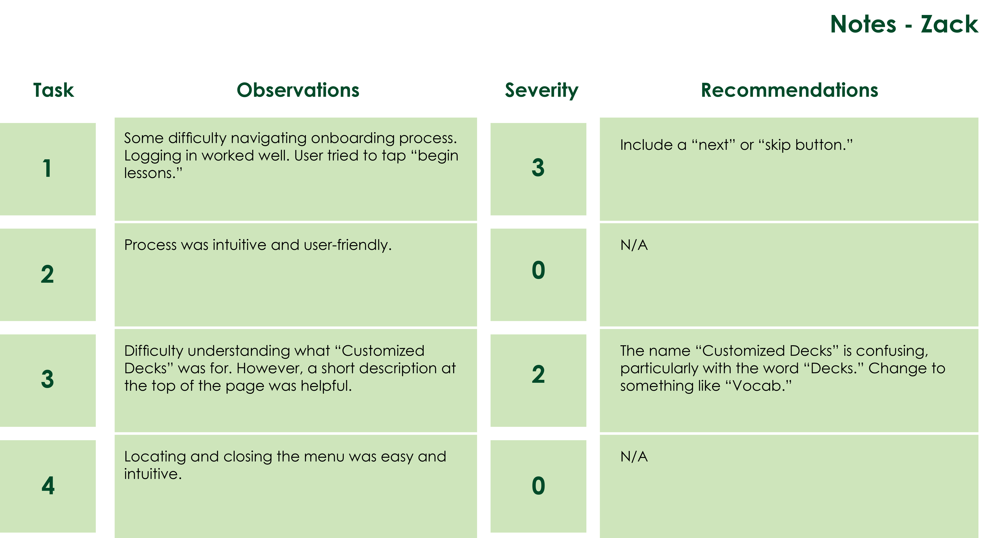
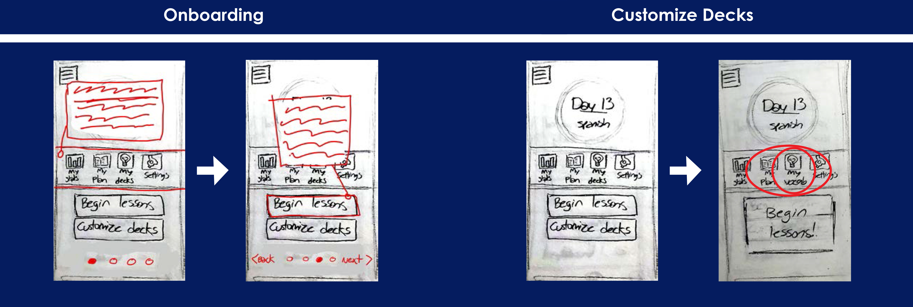

Vocab App

Description
Timeline
January 7th, 2021 - January 21th, 2021
Problem Statement
How might we design a mobile app that empowers users to learn new vocabulary?
Competitor Analysis
I downloaded three apps representing my top competitors and analyzed each app through Peter Morville's User Experience Honeycomb model. I then gave each app a cumulative rating based on my personal experience using the app. Below, you can see how I analyzed Memrise.
For clarity, I compiled my final ratings, as well as the top three pros and the top three cons from each of my competitors.

Surveys
In addition to my competitor analysis, I created a short survey in order to gauge what my audience might be expecting in a vocabulary app. Three interviewees answered 10 questions.
- What is your age?
- What is your current occupation or career goal?
- Briefly describe a few of your hobbies or daily routines
- Is there anything you currently do, or plan to do in the near future, that you could use a vocabulary application for?
- What type of learner are you? (Consider if you are a visual learner, a tactile learner, or an auditory learner.)
- What study methods have worked for you in the past? (Do you prefer taking notes, using flashcards, listening to lectures, background noise?)
- What features would you want to see in a vocabulary app?
- Are you using any apps currently? If so, what do you find useful about these apps?
- What factors would make you choose one vocabulary app over another?
As a final step to understand the needs of my interviewees, I created a chart analyzing what they’re Doing, Thinking, and Feeling. This step helps me organize the notes I gathered from each interview, and see the perspective of my audience.
Proto-Persona
After I developed an idea of what my audience may expect from a vocabulary app, I developed a proto-persona. This persona helped me envision the behaviors, goals, and needs of my userbase.
User Stories
- As David (Assistant Manager), I want to be able to feel rewarded for my efforts to learn a new language so that I can persist with my goals to complete all my lessons.
- As David (Assistant Manager), I want an app with a pleasing visual aesthetic that cultivates a unique user experience, so that I can learn my lessons more efficiently as a visual learner.
- As David (Assistant Manager), I want lessons that feel relevant to my future goals so that I can converse fluently with native speakers.
Job stories
- When I am reviewing my lessons, I want a simple and rewarding way to learn these lessons, so I can reach my goals without losing motivation.
- When I am talking to native speakers, I want to understand complex grammar enough so I can seamlessly engage in casual conversation.
- When I am going about my day and preparing to return home from work, I want timed reminders so I can remember to review my lessons.
Problem Statement
David needs an app that keeps him motivated and teaches advanced Spanish lessons because he wants to communicate with Spanish-speaking customers and clients more easily, but he struggles with motivation to complete his vocab lessons. We will know this to be true when we see David finish daily lessons frequently enough to where he can hold casual conversations with Spanish-speaking associates.
Hypothesis Statement
We believe that by building an app that allows learning a language by translating popular pieces of media and dissecting how language is used in those scenes, David will achieve his goals of learning a language through a rewarding and visual medium, while also reviewing the real world examples of a new language being used in casual conversation scenarios.
User Flows
The next step was to create userflows in order to start thinking about informational hierarchy. I created two userflows based off of the two most important functions of the app.
Wireframes
I then created low-fidelity wireframes for a rough splashscreen, creating an account, menu, and onboarding process. Using my two userflows, I also created low-fidelity wireframes for completing a vocabulary lesson, and creating a customized deck.

Usability Testing
I created a prototype using low-fidelity wireframes. I gathered three participants for 15 minute sessions each.
Theresa
Remote
Zack
Remote
Kevin
In-Person
Each participant was given four tasks to accomplish through the prototype. Their observations and recommendations were recorded with an error severity error.
The most important errors along with each participant’s recommendations were recorded in a final Usability Test Report.

Implemented Changes
Using the recommendations from usability testing, new wireframes were created to counter these errors.
Final Thoughts
Next Steps
There is still a lot more I can do to improve the current design, as well as many next steps for creating the overall design and use of the app.
- Update onboarding to include a “Skip” option. Further refine onboarding to make the process as enjoyable and informative as possible.
- Design an interesting and memorable logo for the splashscreen and mobile icon.
- Design rough versions of the remaining features and create a journey. Incorporate a reward system.
- Create a higher fidelity prototype to further test how color, text size, images, and symbols can influence information hierarchy.
Five Lessons
- Embrace Imperfections
When creating sketches, accept that they will start out unrefined. Don’t over-detail your sketches. - Understand your Userbase
Select users to test your prototype who you think will use and enjoy the app. - Be Patient
Creating the best possible experience for your users requires doing your research and trying out ideas before even considering moving on to a final version. - Accept Change
Accept criticisms and remember that you are designing for your audience, not yourself. - Expand your Horizons
When you think you have everything figured out, take a step back and think further on what you can do to improve the user experience.
Reflection
While this was a brief introductory case study, the experience was densely packed with all the necessary fundamentals I will need to excel in user experience design. While it can be intimidating to start case studies such as these with a time crunch, there are a number of important lessons to take away from them. Having a limited amount of time to complete a study means that some details may be left out, but this leads to better organization based on necessity. This can also happen in a real work environment, so it’s beneficial to learn how to gain as much information as possible in what little time you are given.
Updates
Following full UX certification after CareerFoundry, I've taken the next steps to bring this portfolio piece to the next level. I've created a series of high-fidelity wireframes with additions based on my collected user research for this project. The full prototype can be found here.